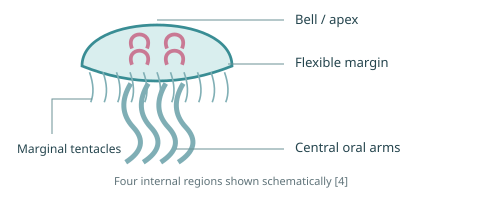
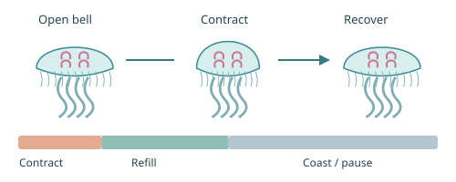
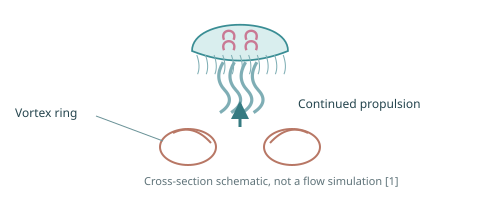
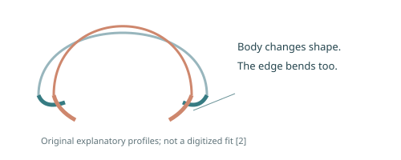
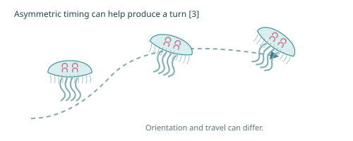
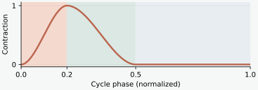

MOON JELLY
THE ART OF THE PULSE
Aurelia aurita · Contraction, recovery and coasting
Anatomy

An oblate bell, a flexible edge, short marginal tentacles and longer central oral arms. Distinguish the fringe from the arms. [4]
Contract → recover → coast

A quick active stroke, recovery of the bell and an interval before the next stroke. Phase widths here are an animation proposal. [1, 2]
Travel beyond the stroke

The moving water beneath the bell can continue producing thrust after active bell motion has stopped. [1]
A flexible margin

The margin does not simply follow the rest of the bell. Uniform scaling misses part of this deformation. [2]
Turning and trailing

Different timing on opposite sides can accompany turning. Trailing appendage lag is a game choice, without a measured delay here. [3]
From observation to animation

GAME proposal: 20% contract · 30% recover · 50% coast. A 4.0 s player cycle; residents use separate pulse and drift clocks.
Natural timing varies [4]
STUDY: 0.24 ± 0.11 Hz in endogenous vertical swimming trials (n = 8; resting bell diameters 13–19 cm). This is a study-specific result, not a universal pulse rate.
Keep the simplification visible
GAME: proposed radial contraction 18%, height change 28%. The compact rig does not reproduce full margin asymmetry or calculate the surrounding fluid flow.